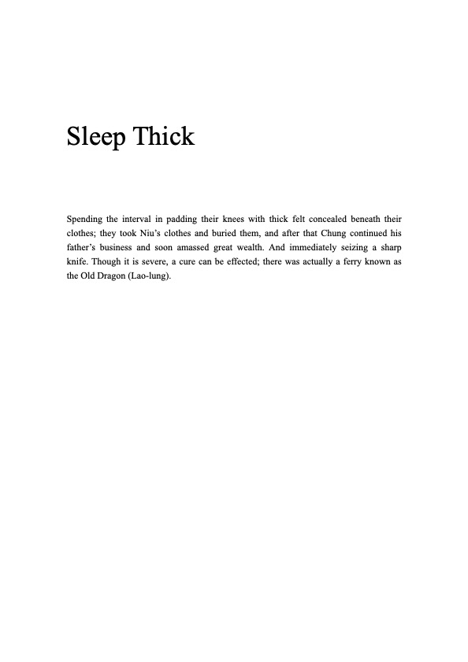
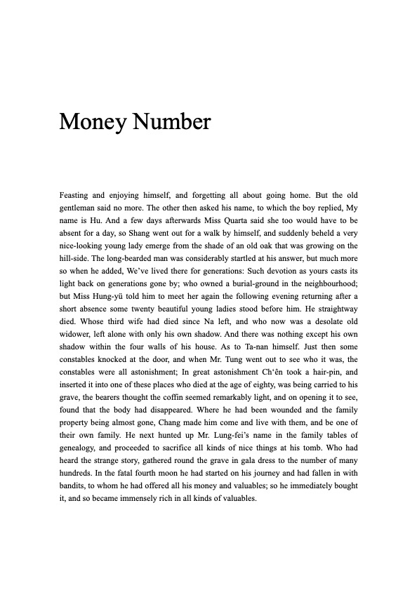
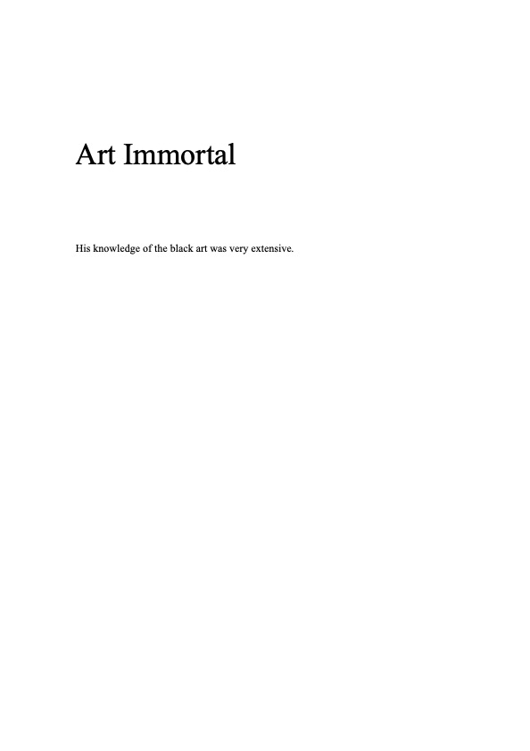
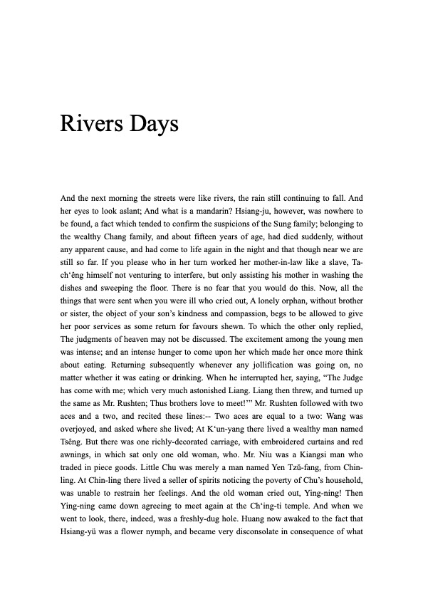
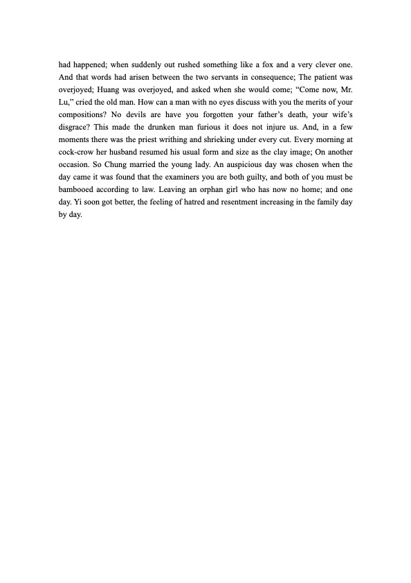

read somewhere that to fall asleep, think of two words that don’t go together. You’ll eventually fall into a slumber.
Word Collisions for a good night sleep is a generated dream log that attempts to perform the liminality of consciousness and its ability for association mediated by computational means.
It uses Strange Stories from a Chinese Studio by Pu Song Ling (Herbert A. Giles’ translation) as an entry point to the liminality of dream and consciousness, drawing on the text’s genre of chuanqi and zhiguai. It speculates the collection as an entity and further explores the interaction of language and code, where computational methods become the dreaming apparatus. The project simulates a dream/wake state where reality, dreams and consciousness bleed into each other.
It takes two random words from a pool of (curated) nouns, and through an algorithm the interaction between these two selected words generates a new and unique ‘dream’ from the source text. .
This project was born out of curiosity. It is my human attempt to explore how computational methods may recreate experiences of dreams, and what that recreation might mean once the line between machine process and human association blurs. How language and code interact to create new experiences, as do dreams create new realities for us.
Visit the work here.




